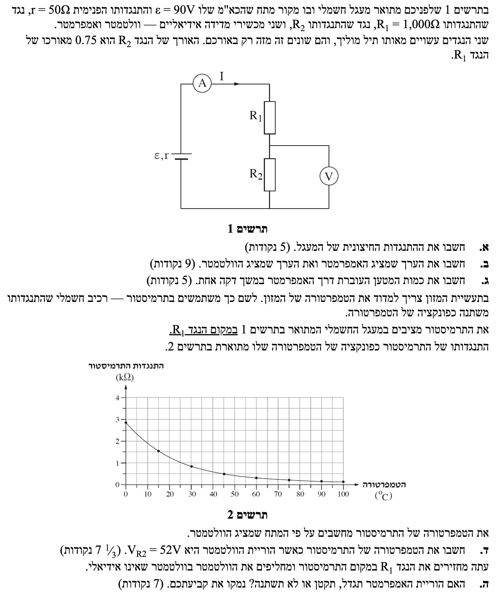
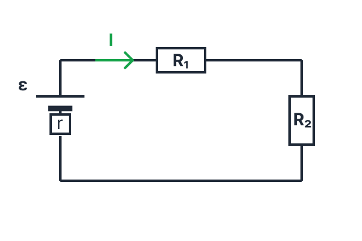

פתרון בגרות בפיזיקה
חשמל 2019, שאלה 2
פתרון מודרך, צעד-אחר-צעד לניתוח מעגלי זרם ישר.
עודכן:
--- --:--:--
מבט כללי על השאלה
השאלה עוסקת בניתוח מעגל חשמלי בסיסי, תוך התייחסות למכשירי מדידה "אידיאליים" ולא אידיאליים, חוקי קירכהוף ואוהם, ושימוש בתרמיסטור שהתנגדותו תלויה בטמפרטורה.
סדר העבודה שלנו יכלול מציאת התנגדות שקולה, חישוב הזרמים והמתחים לפי חוק אוהם למעגל שלם, ושימוש בגרפים להסקת נתונים תוך הקפדה על המרת יחידות.

[תמונת השאלה המקורית]
לא נמצאה תמונה בשם question-image.png באותה תיקייה.
מה נתון:
- כא"מ מקור המתח: \( \varepsilon = 90V \).
- התנגדות פנימית של מקור המתח: \( r = 50\Omega \).
- התנגדות נגד ראשון: \( R_1 = 1000\Omega \).
- נתון כי נגד \( R_2 \) עשוי מאותו תיל מוליך (\( \rho \) ו-\( A \) זהים). אורכו הוא \( 0.75 \) מאורכו של \( R_1 \), לכן: \( L_2 = 0.75 L_1 \).
- מכשירי המדידה (מד-זרם ומד-מתח) אידיאליים.
מה מחפשים:
את ההתנגדות החיצונית הכוללת של המעגל (\( R_{ext} \)).
נוסחאות ועקרונות בשימוש:
\( R = \rho\frac{L}{A} \)
\( R_T = \Sigma R_i \)
פתרון צעד-אחר-צעד:
נמצא תחילה את התנגדות הנגד \( R_2 \). על פי נוסחת התנגדות התיל, ההתנגדות עומדת ביחס ישר לאורך התיל (כאשר סוג החומר ושטח החתך זהים). לכן:
\[ R_2 = 0.75 \cdot R_1 = 0.75 \cdot 1000 = 750\Omega \]
מכיוון שמד-המתח אידיאלי, התנגדותו אינסופית והוא מתנהג כנתק (לא זורם דרכו זרם). מד-הזרם אידיאלי, ולכן התנגדותו אפסית והוא מתנהג כחוט חיבור. לפיכך, המעגל החיצוני מורכב למעשה רק משני הנגדים \( R_1 \) ו-\( R_2 \) המחוברים בטור זה לזה.
נחשב את ההתנגדות החיצונית השקולה:
\[ R_{ext} = R_1 + R_2 = 1000 + 750 = 1750\Omega \]
ההתנגדות החיצונית של המעגל היא \( 1750 \Omega \) (או \( 1.75 k\Omega \)).
טיפ מורה:
זכרו! מכשירי מדידה נקראים אידיאליים כאשר הם לא משפיעים על המעגל (כשהם מחוברים באופן נכון). מד-זרם אידיאלי אפשר לדמיין כחוט חלק, ומד-מתח אידיאלי אפשר לדמיין כאוויר (נתק). תמיד כדאי לשרטט במחברת "מעגל שקול" פשוט יותר שבו רואים רק את הרכיבים שדרכם באמת זורם זרם!

מעגל שקול (ללא מכשירי מדידה)
מה נתון:
מהסעיף הקודם: \( R_{ext} = 1750\Omega \) ו- \( R_2 = 750\Omega \).
מה מחפשים:
את קריאת האמפרמטר (הזרם הכולל במעגל \( I \)) ואת קריאת הוולטמטר (המתח על פני נגד \( R_2 \), נסמן ב-\( V_2 \)).
נוסחאות ועקרונות בשימוש:
\( \Sigma \varepsilon = \Sigma IR \)
\( V = RI \)
פתרון צעד-אחר-צעד:
מד-הזרם מחובר בטור למקור המתח ולנגדים, ולכן הוא מודד את הזרם הכולל במעגל הראשי. נציב את הנתונים בנוסחה לזרם (חוק אוהם למעגל שלם):
\[ I = \frac{\varepsilon}{R_{ext} + r} = \frac{90}{1750 + 50} = \frac{90}{1800} = 0.05A \]
מד-המתח מחובר במקביל לנגד \( R_2 \), ולכן הוא מודד את המתח הנופל עליו. נשתמש בחוק אוהם עבור נגד זה:
\[ V_2 = R_2 \cdot I = 750 \cdot 0.05 = 37.5V \]
הערך שמציג האמפרמטר הוא \( 0.0500 A \), והערך שמציג הוולטמטר הוא \( 37.5 V \).
טיפ מורה:
חוקי קירכהוף אינם תמיד נלמדים לעומק ולעיתים אף יורדים במיקוד, אך מי ששולט בהם יכול לפתור שאלות במעגלי זרם ישר ביתר קלות. במקרה שלנו, יכולנו להגיע לאותה תוצאה גם ללא חוק קירכהוף: פשוט משווים את נוסחת מתח ההדקים של המקור (\( V = \varepsilon - Ir \)) למתח הנופל על המעגל החיצוני (\( V = I \cdot R_{ext} \)), ומשם מבודדים את הזרם (\( I \)). השימוש במשוואת קירכהוף (סכום מתחים במעגל סגור) פשוט חסך לנו שלבים ופישט את המתמטיקה!
מה נתון:
הזרם במעגל: \( I = 0.05A \).
זמן הזרימה הוא דקה אחת. שלב 0 - המרת יחידות: עלינו להמיר את הזמן למערכת MKS (שניות):
\( \Delta t = 1 \text{ min} = 60 s \)
מה מחפשים:
את כמות המטען הכוללת (\( \Delta q \)) שעברה דרך האמפרמטר בפרק זמן זה.
נוסחאות ועקרונות בשימוש:
\( i = \frac{dq}{dt} \)
חישוב:
נבודד את כמות המטען ממשוואת הגדרת הזרם הרגעי (כאשר הזרם קבוע נשתמש בביטוי אלגברי \( I = \frac{\Delta q}{\Delta t} \)):
\[ \Delta q = I \cdot \Delta t \]
נציב את הזרם שמצאנו ואת הזמן (בשניות!):
\[ \Delta q = 0.05 \cdot 60 = 3C \]
כמות המטען העוברת דרך האמפרמטר במשך דקה אחת היא \( 3.00 C \).
טיפ מורה:
זהו סעיף מתנה, אך הוא טומן בחובו "מלכודת" קלאסית של יחידות מידה. זכרו תמיד: \( 1 \text{ Ampere} = 1 \text{ Coulomb} / 1 \text{ Second} \). לכן, חובה להמיר דקות לשניות לפני כל הצבה.
מה נתון:
- הנגד \( R_1 \) הוחלף ברכיב הנקרא תרמיסטור (נגד שערכו משתנה עם הטמפרטורה). נסמן את התנגדותו ב-\( R_T \).
- הוריית הוולטמטר במצב החדש היא: \( V_2 = 52V \).
- גרף (תרשים 2) המתאר את התנגדות התרמיסטור \( R_T \) (בקילו-אוהם) כתלות בטמפרטורה (במעלות צלזיוס).
מה מחפשים:
את הטמפרטורה של התרמיסטור באותו רגע.
נוסחאות ועקרונות בשימוש:
\( V = RI \)
\( \Sigma \varepsilon = \Sigma IR \)
פתרון צעד-אחר-צעד:
כדי למצוא את הטמפרטורה מתוך הגרף, עלינו לדעת תחילה מהי ההתנגדות של התרמיסטור \( R_T \) במצב זה. הוולטמטר עדיין מחובר במקביל לנגד \( R_2 \), ולכן נוכל לחשב את הזרם החדש העובר במעגל:
\[ I_{new} = \frac{V_2}{R_2} = \frac{52}{750} \approx 0.0693 A \]
כעת נשתמש במשוואת המתחים של המעגל השלם כדי לבודד את התנגדות התרמיסטור. נציב את הזרם שמצאנו:
\[ \varepsilon = I_{new} \cdot (R_T + R_2 + r) \]
\[ 90 = 0.0693 \cdot (R_T + 750 + 50) \]
\[ 90 = 0.0693 \cdot (R_T + 800) \]
נחלק את שני אגפי המשוואה בזרם ונחלץ את ההתנגדות:
\[ \frac{90}{0.0693} = R_T + 800 \]
\[ 1298.7 = R_T + 800 \quad \Rightarrow \quad R_T = 1298.7 - 800 = 498.7 \Omega \]
לצורך קריאה מהגרף, הערך קרוב מאוד ל-\( 500 \Omega \). מכיוון שהגרף (תרשים 2) מציג את ההתנגדות ביחידות של קילו-אוהם, נבצע המרה:
\[ R_T \approx 500 \Omega = 0.5 k\Omega \]
נעיין בגרף (תרשים 2): נאתר את הערך \( 0.5 \) בציר ה-y (התנגדות), ונבדוק איזו נקודה מתאימה לו על ציר ה-x (טמפרטורה). ניתן לראות בבירור שהטמפרטורה המתאימה היא \( 45^\circ C \).
הטמפרטורה של התרמיסטור היא \( 45.0^\circ C \).
טיפ מורה:
כאשר אנו מוציאים נתונים מגרף בבחינת הבגרות, קריטי לשים לב ליחידות המידה המופיעות על הצירים! במקרה זה, ציר ההתנגדות נתון בקילו-אוהם (\( k\Omega \)). תלמידים רבים עלולים לגשת לגרף עם הערך 500 (באוהם) ולא להבין מדוע הגרף לא מסתדר להם. המרה פשוטה ל-0.5 קילו-אוהם מאפשרת קריאה נכונה ומהירה של הטמפרטורה.
מה נתון:
- החזרנו את המעגל למצבו הראשוני (נגד \( R_1 \) חזר במקום התרמיסטור).
- החלפנו את מד-המתח האידיאלי במד-מתח שאינו אידיאלי (יש לו התנגדות פנימית סופית משלו, נסמנה \( R_V \)).
מה מחפשים:
לקבוע האם הוריית האמפרמטר (הזרם הכולל במעגל) תגדל, תקטן או לא תשתנה, ולנמק זאת.
נוסחאות ועקרונות בשימוש:
\( \frac{1}{R_T} = \Sigma \frac{1}{R_i} \)
עקרון: התנגדות שקולה של נגדים במקביל תמיד קטנה מההתנגדות של הנגד הקטן ביותר מביניהם.
נימוק שלבי:
נבנה שרשרת לוגית של סיבה ותוצאה:
- מד-המתח מחובר במקביל לנגד \( R_2 \). כעת, מכיוון שיש לו התנגדות סופית משלו (\( R_V \)), נוצר מעגל מקבילי בענף זה.
- כאשר מוסיפים נגד במקביל, ההתנגדות השקולה של כל הצומת יורדת. נוכל להוכיח זאת אלגברית: \( R_{parallel} = \frac{R_2 \cdot R_V}{R_2 + R_V} \), וערך זה תמיד קטן מ-\( R_2 \) לבדו.
- כתוצאה מכך, ההתנגדות החיצונית הכוללת של המעגל (\( R_{ext} \)) קטנה.
- על פי חוק אוהם למעגל השלם: \( I = \frac{\varepsilon}{R_{ext} + r} \), כאשר המכנה קטן (בעוד המונה, כא"מ הסוללה, נשאר קבוע), ערך השבר כולו גדל.
לסיכום: התוספת של מד-המתח (כנגד מקבילי) מקטינה את ההתנגדות החיצונית הכוללת של המעגל. כתוצאה מכך הזרם הכללי במעגל גדל, ולפיכך הוריית האמפרמטר תגדל.
הוריית האמפרמטר תגדל.
טיפ מורה:
אנו רואים כאן היטב כיצד מכשיר מדידה שאינו אידיאלי משפיע בפועל על המעגל. עצם החיבור של הוולטמטר במקביל לנגד שינה את ההתנגדות השקולה, וכתוצאה מכך השפיע על גודל הזרם הכולל במעגל.
חשוב להבין: מכשיר שאינו אידיאלי עדיין מודד באופן מדויק ונכון את המתח או הזרם שעליו! הסיבה שהוא נקרא "לא אידיאלי" אינה משום שהוא "מזייף" את המדידה, אלא משום שעצם נוכחותו מתערבת בזרימת הזרם ומשנה את חלוקת המתחים שהייתה במעגל המקורי לפני שחיברנו אותו.